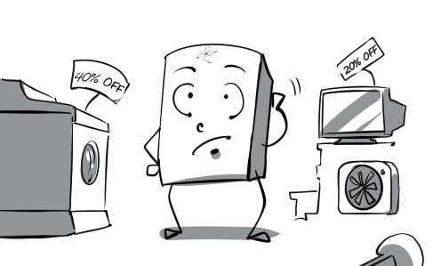
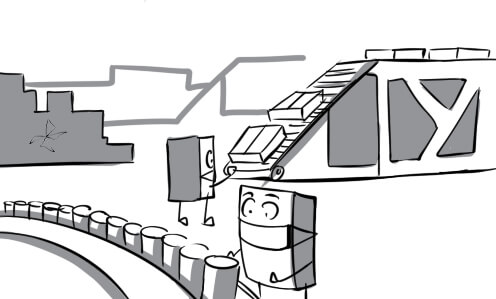
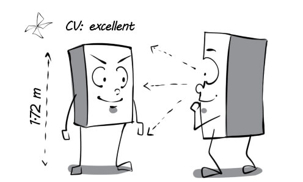

01
accommodation: Peter chose this hotel as his accommodation on his business trip.

02
adventurous: The adventurous traveler is climbing a dangerous cliff with no safety rope.

03
affect: Cold weather in Sapa affects the severity of his flu.
04
attraction: The travel agent is presenting the attraction of Sapa to his clients.

05
budget: The tour he wants to book becomes really budget thanks to the shocking discount program.
06
breathtaking: This adventure tour was such a breathtaking experience for tourists.

07
coastal: Andrew enjoys going to coastal areas because of their pure atmosphere.

08
community: Foreign tourists are recording the activities of the Vietnamese community in Mekong Delta.
09
cosmopolitan: The cosmopolitan is talking about all the countries he has visited.
10
countryside: My friend lives in a small hut in the countryside.
11
destination: Paris is an ideal destination for lovers.
12
diverse: Our tourism products are very diverse. We can satisfy all customer needs.
13
eco-tourism: Eco-tourism is the most interesting way for us to learn about our ecosystem.
14
facility: Safety rope is one of the most necessary facilities for rock climbing.

15
flexible: Our flight options are very flexible. You can book a flight at any time you want.

16
fluctuate: The gold price fluctuates everyday. It makes people confused.

17
foreign: When I come to a foreign country, I always want to visit its wonders.
18
identification: Tourists have to show their identification at check-in before boarding the plane.

19
inhabitant: Foreign tourists are welcomed warmly by the inhabitants of the village
20
itinerary: His itinerary from Ho Chi Minh city to Hanoi seems too long and tiring.

21
journey: Peter was exhausted from his long journey.

22
landscape: Once you visit Sapa, you will be attracted by its breathtaking landscape.
23
local: When visiting Ho Chi Minh city, tourists can go shopping at many local markets such as Ben Thanh, Cho Lon...
24
luggage: Andrew regretted that he carried too much luggage for this trip.
25
luxurious: Peter stays at a luxurious spa resort on his summer vacation.

26
mountainous: Exploring the mountainous regions of Vietnam is a wonderful experience.

27
peaceful: My grandfather and I used to go fishing at this peaceful lake.
28
peak: Finally, George succeeded in conquering the highest peak in the world.

29
picturesque: This village is one of the most picturesque fishing villages in the bay.
30
polluted: The tourist is surprised at how polluted this place is.

31
quaint: The tourists found the ethnic community's old customs very quaint.

32
remote: My uncle lives a very modest life in a remote area in Vietnam.

33
rough: The path from the foot of the mountain to its peak is very rough.
34
scenic: If we travel by train, we can enjoy the scenic route from Ho Chi Minh city to Hanoi.

35
stunning: Peter was totally impressed by the stunning view of sunset.
36
tough: In spite of his age, the old trekker is still tougher than his young fellows.

37
tourism: River tourism has attracted an increasing number of tourists.

38
traditional: Tet is the biggest traditional holiday in Vietnam.
39
travel: I had a chance to visit the Leaning Tower of Pisa when traveling to Italy.

40
trend: Organizing outdoor activities for employees is a current trend in team building.
41
trip: I took a road trip to Las Vegas with my friends last year.

42
unspoiled: Tourists really enjoy their journeys to unspoiled countryside of Vietnam.
43
urban: Ho Chi Minh city has 19 urban districts and 5 suburban districts.
44
village: There are still many poor villages in rural areas in Vietnam.

45
advertise: Peter is tempted to buy the new car advertised on TV.

46
apply: The boss' son applies for the job by himself because he doesn't want to depend on his father.

47
boss: Andrew always disappoints his boss because he is so incompetent and lazy.

48
campaign: A great proportion of the expenses in a presidential campaign are related to media and advertising.

49
candidate: Andy overcame many candidates to secure this position.

50
career: I chose information technology as a career although it was quite difficult.
51
casual: Peter was surprised to find out that he was hired to work just as a casual employee.
52
clerk: The clerk of our company is very pretty and graceful.

53
client: The client is asking John about the prices of these new products.

54
colleague: Andrew coordinates with his colleagues to fulfill his duties.

55
company: My brother has been working as an intern in this company for 3 months.

56
competitor: The two competitors try their best to win the speed typing contest.

57
consumer: The store's wide variety of products makes consumers very confused.

58
credibility: The new employee succeeded in building credibility at work thanks to his honesty.

59
customize: The salesman customizes the discount policy to satisfy his clients.

60
demanding: My boss is so demanding that he is never satisfied with my working performance.
61
earn: Andy earns about 2,000 dollars a month from working at this cafeteria.
62
economic: A remarkable increase in gold price is a consequence of the economic crisis.
63
employ: My company needs to employ two more janitors.

64
endorse: The safety of this washing-powder is endorsed by renowned experts.

65
exhausting: The long and exhausting work shift really wore him out.
66
experience: Thanks to his three-year experience, Justin can work faster and more effectively than his colleagues.
67
goods: There are still many goods in the warehouse. We have to find a way to sell them.

68
hospitality: Their hospitality makes the guests very content.
69
income: The boss earns a great income while his employees have to struggle to have enough money to live.
70
industry: Vietnam has applied modern technology in manufacturing industries.

71
interview: I was still nervous during the job interview although I had prepared for it very well.

72
invest: Mr Thomas decided to use all his money to invest in stocks and shares.
73
job: There is a wide range of job choices that we can pursue.
74
laborer: The laborer is cleaning up debris on the construction site.
75
management: We have just set up some surveillance cameras in the factory to improve our employee performance management.
76
market: The sale of my company's product in the American market continues to decline.
77
marketing: The purpose of marketing is to make consumers buy the product you sell.

78
meeting: The manager was very angry because some of his employees fell asleep during the meeting.

79
money: Money is the only thing that Peter is dreaming about right now.

80
monotonous: No one wants to stop by his store because it is so monotonous.

81
niche: Mr James feels that he has found his niche when he becomes the CEO of this company.

82
occupation: His prime occupation was construction engineering.
83
office: The office of Blueway is designed to enhance the productivity of their workers.

84
overtime: Peter had to do eight hours' overtime this week because he was asked to finish his task as soon as possible.

85
packaging: This food company only uses colorful packaging to pack their products.

86
part-time: This student works as a part-time employee at McDonald's every weekend.

87
pay: Peter felt really happy when he received his first pay.
88
perk: The company gave Mr Robert a sports car as a perk to show him their appreciation.

89
persuade: The real estate agent persuades me to buy this house for $100,000.

90
product: Blueup is introducing English language flashcards - their latest product to consumers.
91
promote: Mr Thomas was promoted to general manager after a long time of working for this company.

92
prospect: The CEO confirms that our company's business prospects are really good.

93
qualification: All of his qualifications meet the requirements of this position.

94
redundant: The company doesn't need two manager, so they have to make one of them redundant.

95
request: The workers go on strike to request for a salary increase.
96
retail: This store retails the new rice cooker for only $30.

97
retire: Mr Robert leads a leisurely life in Hawaii after retiring.

98
rewarding: This is a very rewarding book for business. You should read it.